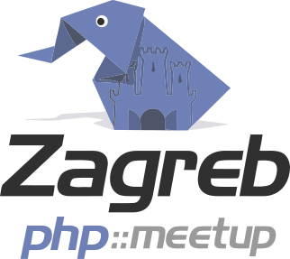
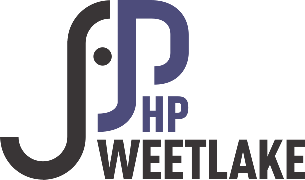

navigation
HaPHPy Birthday
fr
en
es
89 contributeurs publics
-`ღ´- erika
Abdala Cerqueira
acseo
Adam Culp
Adrien Gallou
AFUP Luxembourg
AFUP Lyon
AFUP_Marseille
Alessandro Ronchi
Alexander Makhomet
AmsterdamPHP
Anfa
Arnaud Benassy
Ayhan BARIS
Benoit Viguier
Brussels PHP
Cal Evans
Chris Schalenborgh
Chris Spruck
Comunidad PHP Puebla
Damien
Elao
ElaoFacts
Eleven Labs
Eric Comellas
Eric Van Johnson
Faun
Faun
Floran Brutel
Florian FERRIERE
Florian FERRIERE
Frameworks Days
Hexanet Web
hurma
Iryna Bozhyk
Jacob Chencha
James Titcumb
Jan Polzer
Johan LOPES
JoliCode
Jules Sabouret
Jyrki Lindbloom
Kinn Coelho Julião
KristiansandPHP
Laurence Hoizey
Léon Cros
Leonardo Tumadjian
Loïc Caillieux
Luís Otávio Cobucci Oblonczyk
Marco Rieger
Mark Baker
Maxime COLIN
Mehmet T.
Michael C.
Michael Cullum
Michelangelo van Dam
Mikael RANDY
Motaquillah Maddane
Olivier Mansour
opinalo
PHP Hampshire
PHP Limburg BE
PHP South Coast
PHP USERGROUP DD
PHP Warwickshire
PHP Wellington
PHP-TR
PHP-WVL
PHPBarcelona
phpBB
PHPNET Hébergeur web
Povilas Balzaravičius
PrestaShop
PUG MoRe
Rafael Dohms
Ramon de la Fuente
Richard HANNA
Romain Gautier
Roman Pronskiy
San Diego PHP
Simon Boyer
Stéphane HULARD
SunShinePHP
SweetlakePHP
Team Burton M6Web
The Frankfurt PHPUG
Thomas Jarrand
Vincent PONTIER
Žilvinas
52 groupes d'utilisateurs de PHP
PHPRio
Brazil
, Rio de Janeiro
phprio
PHPWomen
International
PHPWomen
PHP-PB
Brazil
, Joao Pessoa
phppb
PUG Roma
Italy
, Rome
pug_roma
PHPem
UK
PHPem
PHPers
Poland
PHPersPL
PHP Srbija
Serbia
, Belgrade
phpsrbija
PUG MoRe
Italy
, Modena, Reggio Emilia
pug_more
PHP Warwickshire
UK
, Warwickshire
phpwarks
PHPUGFFM
Germany
, Frankfurt/Main
phpugffm
afup Toulouse
France
, Paris
afup_toulouse
KristiansandPHP
Norway
, Kristiansand
KristiansandPHP
PHP Limburg BE
Belgium
, Hasselt
phplimbe
PHPNW
UK
, Manchester
PHPNW
AmsterdamPHP
Netherlands
, Amsterdam
amsterdamphp
Kaunas PHP
Lithuania
, Kaunas
kaunasphp
PHP.gent
Belgium
, Ghent
phpgent
PHP Surrey
UK
, Guildford
phpsurrey
afup Marseille
France
, Marseille
AFUP_Marseille
MalangPHP
Indonesia
, Malang
MalangPHP
afup Paris
France
, Paris
afup_paris
afup Nantes
France
, Nantes
SDPHP
USA
, San Diego
sdphp
PHP Dorset
UK
, Dorset
phpdorset
MoroccoPHP
Morocco
MoroccoPHP

ZgPHP
Croatia
, Zagreb
zgphp
PHPSC
Brazil
PHP_SC
Vilnius PHP
Lithuania
, Vilnius
vilniusphp
PHP Belfast
Northern Ireland (UK)
phpbelfast
PHP Wellington
New Zealand
, Wellington
phpwgtn
PHP-TR
Turkey
, Istanbul
php_tr
PHP Puebla
México
, Puebla
ComPHPPuebla
austinphp
USA
, Austin
austinphp

SweetlakePHP
NL
, Zoetermeer
SweetlakePHP
Istanbul PHP
Turkey
, Istanbul
IstanbulPHP
SoFloPHP
USA
, South Florida
soflophp
meet.php
Poland
, Poznan
meetphp
afup Bordeaux
France
, Bordeaux
PHPBenelux
Belgium, the Netherlands and Luxembourg
PHPBenelux
BrusselsPHP
Belgium
, Brussels
brusselsphp
PHP Minds
UK
, Nottingham
phpminds
PHP Hampshire
UK
, Hampshire
phphants
PHP Auckland
New Zealand
, Auckland
phpakl
PHP-WVL
Belgium
, Roeselare
phpwvl
PHPUGDD
Germany
, Dresden
phpugdd
afup Luxembourg
Luxembourg
afup_luxembourg
afup Lyon
France
, Lyon
afup_lyon
BrightonPHP
UK
, Brighton
brightonphp
AtlantaPHP
USA
, Atlanta
AtlantaPHP
afup
France
afup
PHP UG Munich
Germany
, München
phpugmunich
Chicago PHP
USA
, Chicago
ChiPHPUG
Remerciements
Merci à
php.ug
pour la liste des Groupes d'Utilisateurs PHP.
Illustrations d'arrière plan des dépendances dans Composer par
Andrei Kashcha
et son projet
Code Galaxies Vizualization
.
HaPHPy éléPHPant fabriqué avec soin par V. Fanzutti.